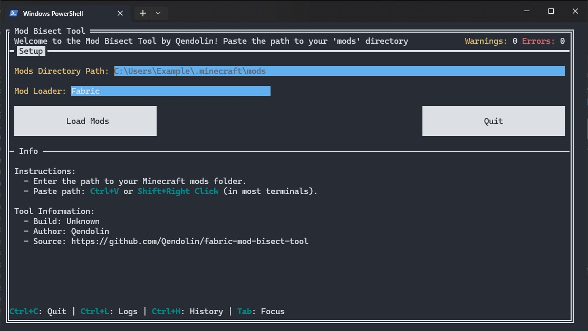
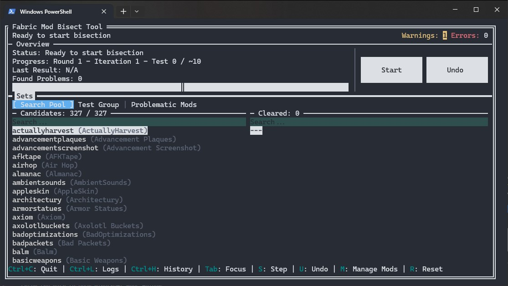
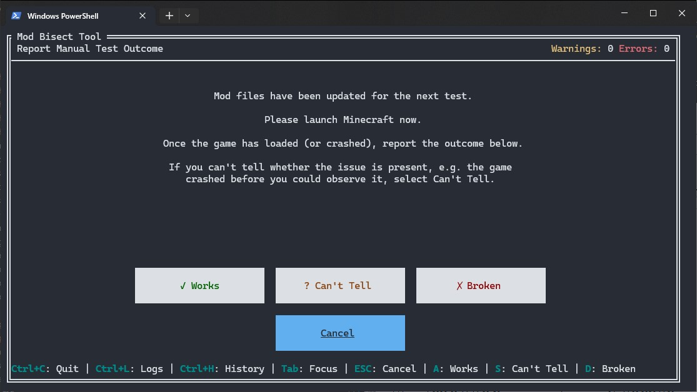
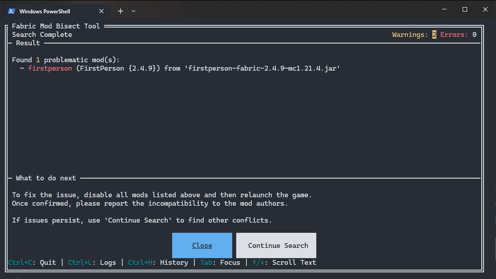
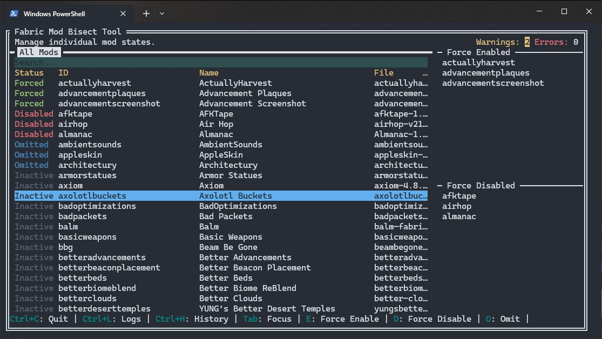
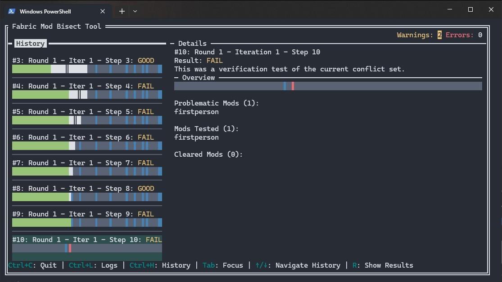

TUI User Guide
This guide covers the terminal (TUI) version of the Mod Bisect Tool. If you are using the graphical version, see the GUI User Guide.
Installation
- Open the download page. It detects your operating system and recommends the appropriate architecture.
- Choose Latest or Stable, select Terminal, then choose your operating system and architecture.
-
If you selected Linux or macOS, make the TUI binary runnable before
starting it:
This adds the execute bit so the operating system will allow the program to start. Without it, the file may be saved but not run.chmod +x ./mod-bisect-tui-*
How to Use the Tool
Using the tool is a simple, guided process.
Step 1: Setup
When you first launch the tool, you'll see the setup screen.
Action
-
Enter or paste the full path to your Minecraft
modsfolder. - Press the Load Mods button.
The tool will then analyze all your mods, which should only take a second.

Step 2: The Main Screen
This is your mission control. You'll see several lists showing the status of your mods. The most important one is “Candidates,” which are the mods currently being tested.
Action
-
Press the “Start” button (or the
Skey) to begin the first test.
Force-enable mods that are needed to see the problem.
If the issue you're trying to track down only happens when a specific mod is active, you should force enable that mod.
For example, if you're using Iris and something only breaks when shaders are turned on, you'll need to force-enable Iris. Otherwise, the tool might disable it during testing, and you wouldn't even be able to tell if the issue still happens.
Back up worlds before testing if you will load them! This is not needed for servers, new test worlds, or tests that do not load a world.

Step 3: The Test
The tool will now show you a “Test in Progress” screen. It has just enabled a specific set of mods in your folder.
Action
- Launch Minecraft using your normal mod loader (Fabric, Quilt or NeoForge).
- Check if the problem still occurs. Does the game crash? Does the bug you're hunting still happen?
-
Return to the tool and click the button that matches the outcome:
- ✓ Works: The problem did not happen. The game loaded and worked as expected.
- ✗ Broken: The problem did happen, such as a crash or a visible bug.
- ? Can't Tell: The result was unclear. For example, the game crashed before you could check, or something else prevented you from observing the issue.
The tool will use your answer to narrow down the search and prepare the next test. Repeat this process until a result is found.

Step 4: The Results
Once the tool has found a problematic mod (or set of mods), it will show you the Result screen.
Action
- Take note of the problematic mods listed.
- To fix the issue, disable at least one mod from each conflict set listed. The tool will also tell you if any other mods depend on the problematic ones; consider disabling them as well.
- If you suspect there might be other unrelated issues, you can return to the main page and click “Continue Search” to start looking for the next problem among the remaining mods.

Managing Mods
On the main screen, you can press M to go to the
Manage Mods page. This gives you fine-grained control
over the search process.
- Force Enabled: The mod will be always on for every test. Use this for essential libraries or APIs (like Fabric API) that you are certain are not the problem.
-
Force Disabled: The mod is treated as if it were
temporarily removed from the
modsfolder. It will be always off and cannot be activated as a dependency for another mod. -
Omitted: The mod is ignored and removed from the
search pool (
Candidates). However, if another mod being tested requires it as a dependency, the tool will still activate it. This is useful for performance mods or libraries you've already confirmed are safe but are needed for other mods to run. - Pending: A temporary status indicating a mod will be added back into the search pool at the start of the next full search round. This is a safety measure to ensure the integrity of an in-progress bisection.

Tip: If you already have an idea of which mods might be causing trouble, you can speed up the search! Press
Shift+Oto set all mods to Omitted. Then, simply go through the list and toggle Omitted off (by pressingO) for only the mods you suspect are involved. This way, the tool will only search within that smaller group.
History Page
You can press Ctrl+H to go to the
History page. This page provides a detailed log of
all the tests performed during the current bisection session. For each
test, you'll see which mods were enabled and the outcome you reported
(Works or Broken). This is useful for reviewing your steps,
understanding how the tool arrived at its conclusion, or for debugging
purposes if you believe there was an error in the process.

Log Page
You can press Ctrl+L to go to the
Log page. This page displays the internal log of the
tool in real-time. It's primarily useful for debugging purposes or for
providing information when reporting an issue to the developers. You
can also find the full log file saved as
bisect-tui-YYY-MM-DD_HH-MM-SS.log in the same directory
as the executable.
Command-Line Options
You can launch the tool with these optional flags for more control.
-
--no-embedded-overrides: Disables the built-in list of fixes for mods that have known dependency issues. Use this if you think a built-in fix is causing problems. -
--verbose: Turns on detailed debug logging. The log file (bisect-tool.log) will contain much more information, which is useful for bug reports. -
--loader <loader>: Forces the mod loader to use:fabric,neoforge,connector((Neo)Forge with Fabric via Sinytra Connector) orkilt(Fabric with (Neo)Forge). By default the loader is auto-detected from your mods folder. -
--log-dir <path>: Lets you specify a different folder to save thebisect-tool.logfile. For example:--log-dir "C:\my_logs".
Dependency Overrides
Sometimes a mod author forgets to list a dependency in their metadata.
This tool can add or remove those entries with a file named
fabric_loader_dependencies.json.
This tool also extends the standard format with the ability to
override the
provides field, which is useful for fixing complex
library conflicts.
The GUI loads override files in this order:
- The current working directory
-
The Minecraft
configfolder next to yourmodsfolder - The built-in overrides included with the tool
Log Files
The app creates its log file in the first folder that works, in this order:
- The current working directory
-
The OS log directory:
- macOS:
~/Library/Logs/mod-bisect-tool - Windows:
%LOCALAPPDATA%/mod-bisect-tool/logs -
Linux:
$XDG_STATE_HOME/mod-bisect-tool, or~/.local/state/mod-bisect-tool
- macOS:
- The OS temp directory, under
mod-bisect-tool